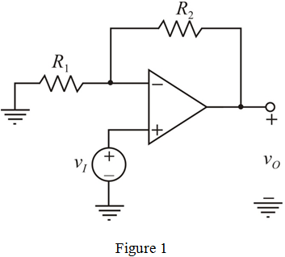

New bandwidth of the amplifier is, .
Calculate the new gain of the amplifier.
Therefore, the highest gain available is  .
.
Draw the non-inverting amplifier circuit.

Gain of the amplifier is,
Calculate the gain bandwidth of this amplifier.
Substitute for and for .
New bandwidth of the amplifier is, .
Calculate the new gain of the amplifier.
Therefore, the highest gain available is .